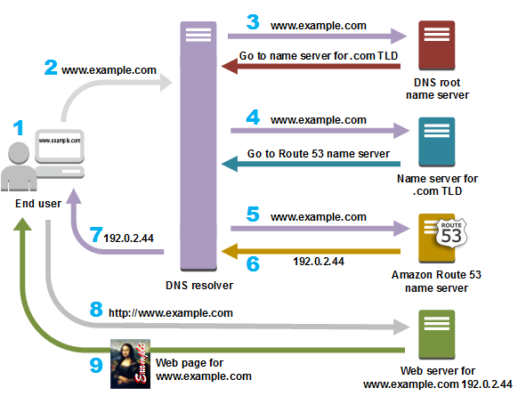

AWS 네트워크 핵심 서비스
VPC · Route 53 · ELB · CloudFront
- ✅ 시험 단골 비교 포인트 중심
- ✅ “왜 이 서비스인가” 판단 기준
발표자 : 이지호🐯
Amazon VPC
AWS 클라우드 안에 만드는 나만의 독립된 가상 네트워크
- VPC는 리전(Region) 단위로 생성되며, 처음 만들 때 IP 주소 범위(CIDR)를 직접 정함
- 하나의 VPC는 다시 서브넷(Subnet)으로 나뉘고, 각 서브넷은 반드시 하나의 가용 영역(AZ)에 속함
- 퍼블릭 서브넷: 인터넷 게이트웨이(IGW)와 연결되어 외부 인터넷과 직접 통신 가능
- 프라이빗 서브넷: 외부와 직접 연결되지 않으며, 필요 시 NAT Gateway를 통해서만 인터넷 접근
※ NAT Gateway: 프라이빗 서브넷의 서버가 외부로 나가는 인터넷 통신만 가능하게 해주는 중계 장치
VPC 보안 (시험 필수 비교)
VPC 안에서 트래픽을 제어하는 대표적인 두 가지 보안 장치
| 구분 | Security Group | NACL |
|---|---|---|
| 적용 범위 | EC2 인스턴스 단위 | 서브넷 단위 |
| 동작 방식 |
Stateful (요청 허용 시 응답 자동 허용) |
Stateless (요청·응답 모두 규칙 필요) |
| 규칙 유형 | Allow만 가능 | Allow / Deny 가능 |
Amazon Route 53
도메인 이름을 IP 주소로 변환하는 관리형 DNS 서비스

사용자는 주소만 입력하지만, 내부에서는 여러 DNS 서버를 거쳐 최종 IP가 결정됩니다
Route 53은 이 흐름에서 무엇을 하나?
- DNS 조회는 전 세계 공통 구조로 동작
- Root DNS → .com TLD → 권한 네임서버 순서
-
Amazon Route 53은
👉 example.com의 최종 책임자(Authoritative DNS)
- “www.example.com의 IP는 무엇인가?”에 최종 답변
- 이 단계에서 트래픽 분기 정책을 적용 가능
⚠️ Route 53은 웹 요청을 받지 않습니다 (DNS까지만 담당)
Route 53 라우팅 정책 (시험 단골)
- Simple → 하나의 서버로 연결 (기본)
- Weighted → 트래픽 비율 분산 (예: 70% / 30%)
- Latency → 사용자에게 가장 빠른 리전
- Failover → 장애 시 자동 전환 (DR 구성)
- Geolocation → 국가/지역 기준 분기
👉 “DNS 단계에서 이미 트래픽 전략이 시작된다”
ELB (Elastic Load Balancer)
들어오는 요청을 여러 대상에게 분산해 서비스의 안정성과 확장성을 보장하는 트래픽 진입점
- ELB는 EC2가 이미 여러 대일 때만 쓰는 서비스가 아님
- 지금은 1대여도, 앞으로 서버가 늘어날 가능성이 있다면 미리 ELB를 앞단에 두는 것이 일반적인 구조
- 사용자는 항상 ELB 주소로 접속하고, 실제 서버 수나 변경 여부는 신경 쓸 필요가 없음
- Health Check를 통해 장애가 발생한 서버는 자동으로 트래픽에서 제외
※ 핵심: ELB는 “서버가 많아서” 쓰는 게 아니라, 서버 수를 신경 쓰지 않기 위해 사용
ELB 종류 비교 (ALB vs NLB)
| 구분 | ALB | NLB |
|---|---|---|
| 동작 계층 |
L7 (Application Layer) HTTP/HTTPS 이해 가능 |
L4 (Transport Layer) TCP/UDP 패킷 단위 처리 |
| 처리 기준 |
URL 경로, Host, Header 등 요청 내용 기반 |
IP 주소, 포트 번호 기준 패킷 정보 기반 |
| 특징 |
웹 애플리케이션에 최적화 세밀한 라우팅 가능 |
초고성능 처리 고정 IP 제공 |
| 적합한 환경 |
웹 서비스 REST API 마이크로서비스 구조 |
게임 서버 실시간 스트리밍 대규모 TCP 트래픽 |
※ 쉽게 말해, ALB는 “요청 내용을 보고 판단”, NLB는 “속도와 처리량이 최우선”
OSI vs TCP/IP — L7 / L4는 어디서 나왔을까?
네트워크를 이해하기 위한 OSI 모델과 실제 인터넷이 동작하는 TCP/IP 구조의 관계

- 우리가 말하는 L7 / L4는 OSI 개념을 빌려 쓰는 표현
- L7 (Application) → 요청 내용(URL, 헤더)을 보고 판단 → ALB
- L4 (Transport) → IP·포트 기반으로 빠르게 전달 → NLB
Amazon CloudFront
전 세계 사용자에게 콘텐츠를 빠르게 전달하기 위한 CDN 서비스(유튜브/넷플을 생각하기!)

- 이미지·동영상·정적 파일을 엣지 로케이션에 미리 저장(캐싱)
- 사용자는 가장 가까운 위치에서 콘텐츠를 받아 응답 속도가 크게 개선
- AWS Shield, WAF와 연계해 보안까지 함께 강화 가능
AWS 네트워크 핵심 서비스 한눈 비교
| 구분 | VPC | Route 53 | ELB | CloudFront |
|---|---|---|---|---|
| 역할 | 네트워크 공간 | DNS / 진입점 결정 | 트래픽 분산 | 콘텐츠 전송 가속 |
| 핵심 질문 | 서버는 어디에? | 어디로 갈까? | 누가 처리할까? | 가까운 데 있나? |
| 동작 위치 | 리전 내부 | 글로벌 | VPC 내부 | 엣지 로케이션 |
| 주요 기능 | Subnet, SG, NACL | 라우팅 정책 | Health Check | 캐싱, CDN |
| 트래픽 처리 | X | X | O | X |
| 캐싱 | X | X | X | O |
| 비유 | 집/단지 | 전화번호부 | 교통정리 | 집 근처 편의점 |
QUIZ 1–2 : VPC
Q1. 프라이빗 서브넷의 EC2가 인터넷으로 나가기 위해 필요한 구성은?
Q2. Security Group에 대한 설명으로 옳은 것은?
QUIZ 3–4 : Amazon Route 53
Q3. Amazon Route 53의 핵심 역할은?
Q4. Route 53이 트래픽을 직접 처리하지 않는 이유는?
QUIZ 5–6 : ELB
Q5. ALB가 적합한 환경은?
Q6. NLB의 특징으로 옳은 것은?
QUIZ 7–8 : CloudFront & 전체 흐름
Q7. Amazon CloudFront의 핵심 목적은?
Q8. 올바른 서비스 흐름은?